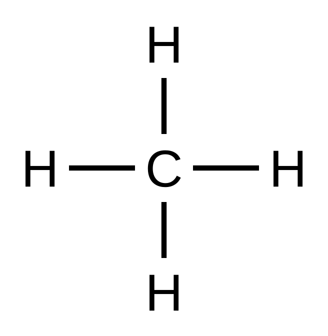
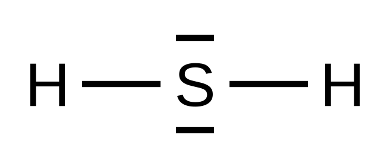
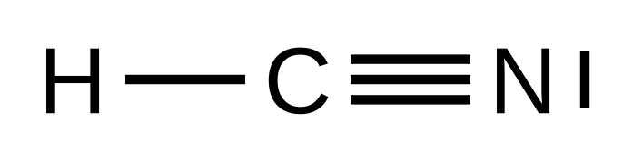
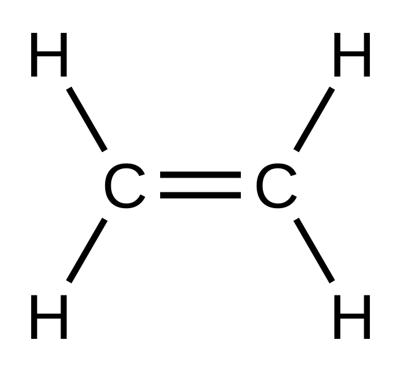
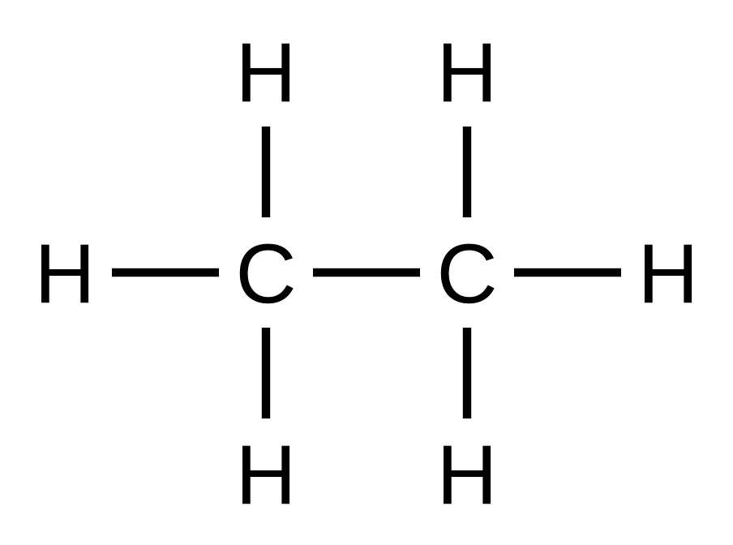
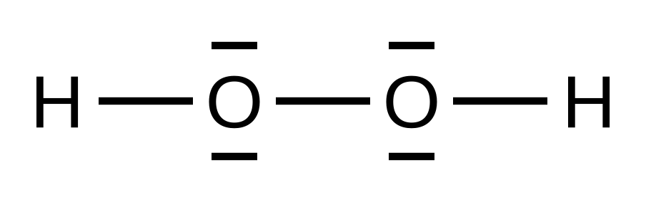
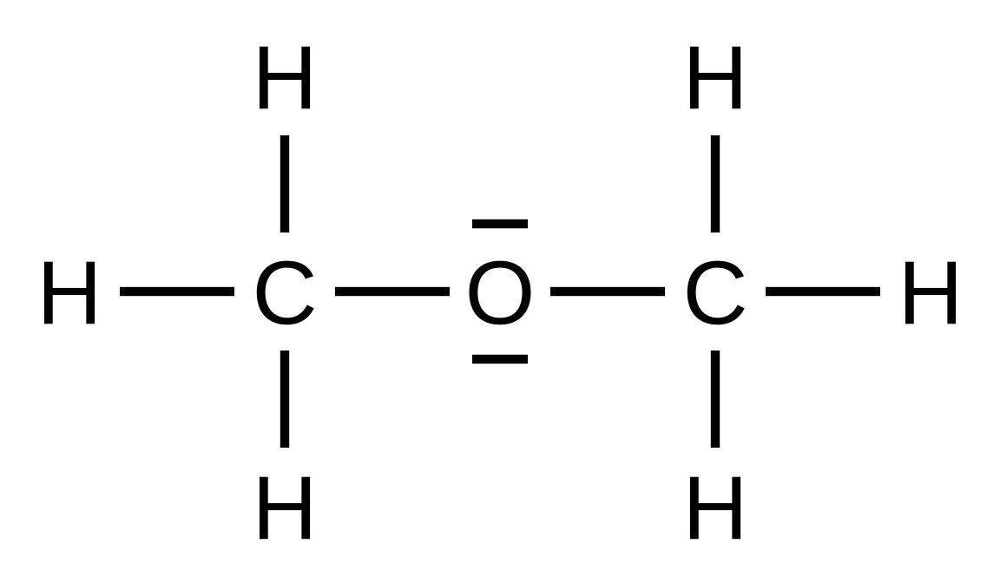

So nutzen Sie die Hilfen: Versuchen Sie es erst allein. Öffnen Sie dann Hilfe 1, danach Hilfe 2. Die Lösung dient zur Kontrolle – vergleichen Sie sie mit Ihrer eigenen Antwort und verbessern Sie diese.
Aufgabe 1: Drei Arten der chemischen Bindung
Ergänzen Sie die Übersicht über die drei Arten der chemischen Bindung!
Hilfe 1
Hilfe 2
Lösung (erst nach eigenem Versuch öffnen!)
Atombindung – Nichtmetallatome + Nichtmetallatome – molekulare Stoffe – z. B. Wasser (H₂O).
Aufgabe 4: Wie erreichen Chlor-Atome die Edelgaskonfiguration?
Erklären Sie am Beispiel des Chlor-Moleküls, wie die beiden Chlor-Atome die Edelgaskonfiguration erreichen!
Hilfe 1
Hilfe 2

Lösung (erst nach eigenem Versuch öffnen!)
Aufgabe 6: Elementmoleküle H₂, F₂, O₂, N₂
Zeichnen Sie die Strukturformeln und geben Sie die Bindungsart an!
Hilfe 1
Hilfe 2
Lösung (erst nach eigenem Versuch öffnen!)


Aufgabe 9: Strukturformeln zeichnen
Zeichnen Sie die Strukturformeln der Moleküle a) bis l)! Wählen Sie unten das Molekül, bei dem Sie Hilfe brauchen.
Hilfe 1
a) NH₃: N: 5, H: 3 · 1 → 8 Valenzelektronen = 4 Elektronenpaare.
b) CH₄: C: 4, H: 4 · 1 → 8 Valenzelektronen = 4 Elektronenpaare.
c) H₂S: S: 6 (VI. Hauptgruppe, wie O), H: 2 · 1 → 8 Valenzelektronen = 4 Elektronenpaare.
d) HCN: H: 1, C: 4, N: 5 → 10 Valenzelektronen = 5 Elektronenpaare.
e) CH₂O: C: 4, H: 2 · 1, O: 6 → 12 Valenzelektronen = 6 Elektronenpaare.
f) C₂H₄: C: 2 · 4, H: 4 · 1 → 12 Valenzelektronen = 6 Elektronenpaare.
g) C₂H₂: C: 2 · 4, H: 2 · 1 → 10 Valenzelektronen = 5 Elektronenpaare.
h) C₂H₆: C: 2 · 4, H: 6 · 1 → 14 Valenzelektronen = 7 Elektronenpaare.
i) ★ N₂H₄: N: 2 · 5, H: 4 · 1 → 14 Valenzelektronen = 7 Elektronenpaare.
j) ★ H₂O₂: H: 2 · 1, O: 2 · 6 → 14 Valenzelektronen = 7 Elektronenpaare.
k) ★ CS₂: C: 4, S: 2 · 6 → 16 Valenzelektronen = 8 Elektronenpaare.
Hilfe 2
b) CH₄: C in die Mitte (Bindigkeit 4), vier Einfachbindungen. Bleibt ein Paar übrig?
c) H₂S: Wie beim Wasser-Molekül: S in der Mitte, zwei Einfachbindungen, zwei nicht-bindende Elektronenpaare am S-Atom.
d) HCN: C in die Mitte (H–C–N). Das C-Atom hat nach Schritt 3 noch kein Oktett → zwei freie Paare des N-Atoms werden zu bindenden Paaren (Dreifachbindung C≡N).
e) CH₂O: C in die Mitte, H, H und O daran. Das C-Atom braucht noch ein Paar → Doppelbindung C=O; am O-Atom bleiben zwei freie Paare.
f) C₂H₄: Die beiden C-Atome sind miteinander verbunden, jedes trägt zwei H-Atome. Für das Oktett brauchen die C-Atome eine Doppelbindung C=C.
g) C₂H₂: H–C–C–H. Damit jedes C-Atom vier Bindungen hat, braucht es eine Dreifachbindung C≡C.
h) C₂H₆: C–C-Einfachbindung, jedes C-Atom trägt drei H-Atome. Nur Einfachbindungen.
i) ★ N₂H₄: N–N-Einfachbindung, jedes N-Atom trägt zwei H-Atome und ein freies Elektronenpaar (Bindigkeit 3).
j) ★ H₂O₂: H–O–O–H: Jedes O-Atom hat zwei Bindungen und zwei freie Elektronenpaare.
k) ★ CS₂: Gleiche Lösung wie beim CO₂-Beispiel – S steht in derselben Hauptgruppe wie O.
l) ★ C₂H₆O: 20 Valenzelektronen = 10 Elektronenpaare. Das O-Atom kann zwischen C und H stehen (C–C–O–H) oder zwischen den beiden C-Atomen (C–O–C).
Lösung (erst nach eigenem Versuch öffnen!)













Aufgabe 10: Welche Bindung liegt vor?
Ordnen Sie die Stoffe begründet der Metall-, Ionen- oder Atombindung zu!
Hilfe 1
Hilfe 2
Lösung (erst nach eigenem Versuch öffnen!)
Ionenbindung: NaCl, MgCl₂, KBr, CaO (Metall- und Nichtmetallatome).
Atombindung: HBr, C₃H₈, Cl₂, CO₂, PF₃, N₂H₄ (nur Nichtmetallatome).
Aufgabe 11: Fehlersuche
Markieren Sie die fünf Fehler und korrigieren Sie sie!
Hilfe 1
Hilfe 2
Lösung (erst nach eigenem Versuch öffnen!)
📱 Weiter üben: App „BioChemie FOS BOS Würzburg“ → Molekulare Stoffe → Valenzstrichformeln (Strukturformeln)